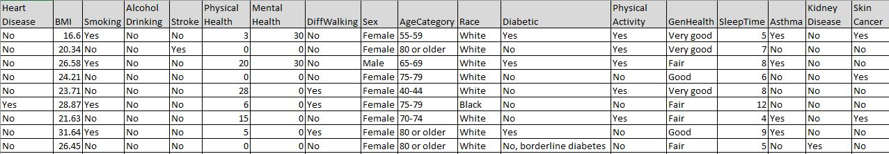
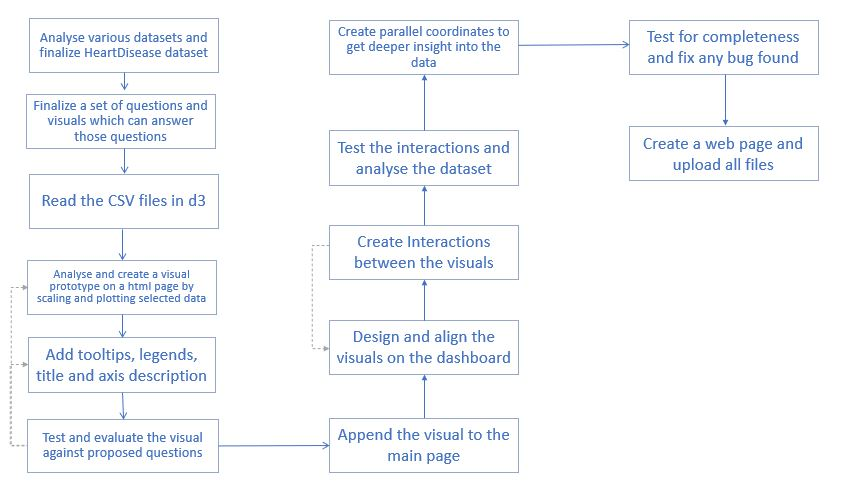
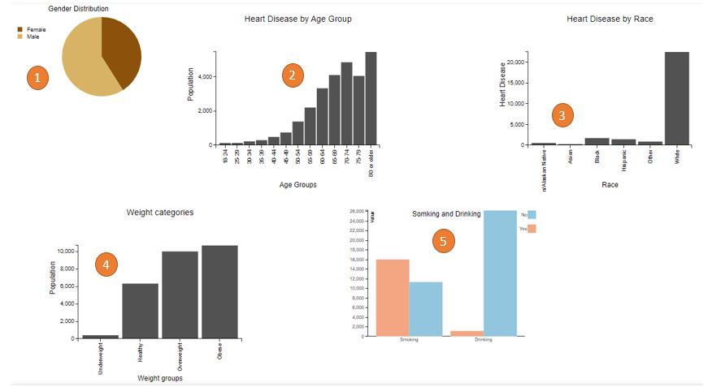
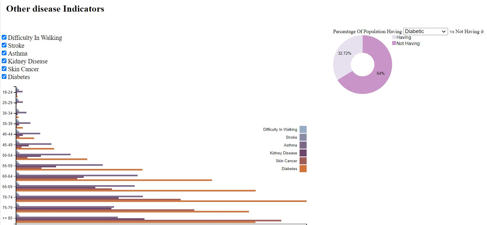
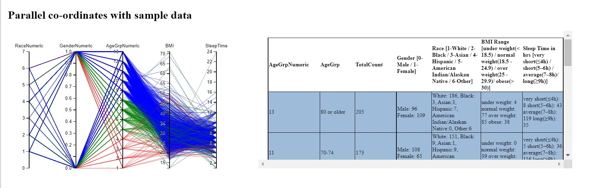

Introduction
Heart disease is one of the driving causes of death in the United States among all races. According to CDC, one person dies every 36 seconds in the United States from Heart disease. Coronary heart disease and Myocardial infarction are the common types of heart diseases killing people. A few other medical conditions and way of life choices can moreover put individuals at the next chance for heart disease. Identifying and predicting the components that have the most prominent effect on heart infection is exceptionally vital in healthcare.
Dataset
We collected the dataset from Kaggle. The dataset contains 18 columns that directly or indirectly influence heart disease. The total number of records in the dataset is 319,795 and the records for the population having heart disease is 27,373.

Design Choices

Initial Design to create a dashboard showing parallel coordinates and various other visuals.
Final design was more refined.
1. We used pie/donut chart for dimensions containing 0 or 1.
2. The color encoding keeps color blindness scenario in mind.
3. Tool tips are provided for the bar chart, pie chart, donut chart, grouped bar chart to give additional information to the user.
4. Interactions between charts to observe the impacts on multiple attributes.
5. Dynamic charts based on user selection like dropdown and checkboxes for selecting disease.
6. We've used parallel coordinates to observe multiple attributes with a sample data of 1000 and we have chosen Red/Green/Blue to represent the age groups as these colors are easy to identify.
- Red (18-39)
- Green (40-59)
- Blue (60-80 or older)
7. A table is associated with parallel coordinates to view the observations while interacting with it.
8. We've arranged the visuals from left to right, top to bottom so that they answer the breath questions and then the depth questions.
The parallel co-ordinates in the end helps to validate the above observations.
Process
The process was to build the visual is described in the above image.
Observations:
1. Chances of getting heart disease for males is more.
2. Chances of heart disease increase with age.
3. White population has the maximum chances of getting heart disease. (It may be due to the location (US) where data is collected).
4. BMI suggests that obese and overweight categories have very high chances of getting heart disease as compared to underweight category.
5. We found that the probability of having heart disease is more for population with smoking habit, and less impact with drinking.

6. There is a higher percentage of people having heart disease with diabetes.

7. Although the chances of having other diseases increase with age, diabetic cases are at peak in the age group 70-74 and skin cancer is at peak in the age group 80 or older.
To get a deeper understanding of relationships between Race, Gender, Age group, BMI, Sleep time .
8. We've used parallel coordinates with sample data of 1000, the above observations are validated and found to be true with respect to Race, Gender, Age group, BMI, Sleep time.

References
1. An Introduction to Designing with D3 by Scott Murray | Interactive data visualization for the web.
2. https://www.w3schools.com/ for html and css
3. https://bl.ocks.org/Andrew-Reid/64a6c1892d1893009d2b99b8abee75a7
4. https://www.frameworkish.com/html/2016/05/04/grouped-dynamic-bar-chart-d3.html
5. https://codepen.io/Rastikko/pen/GqNbqM
6. https://bl.ocks.org/jasondavies/1341281
7. https://bl.ocks.org/syntagmatic/482706e0638c67836d94b20f0cb37122
8. http://bl.ocks.org/jfreels/6734025